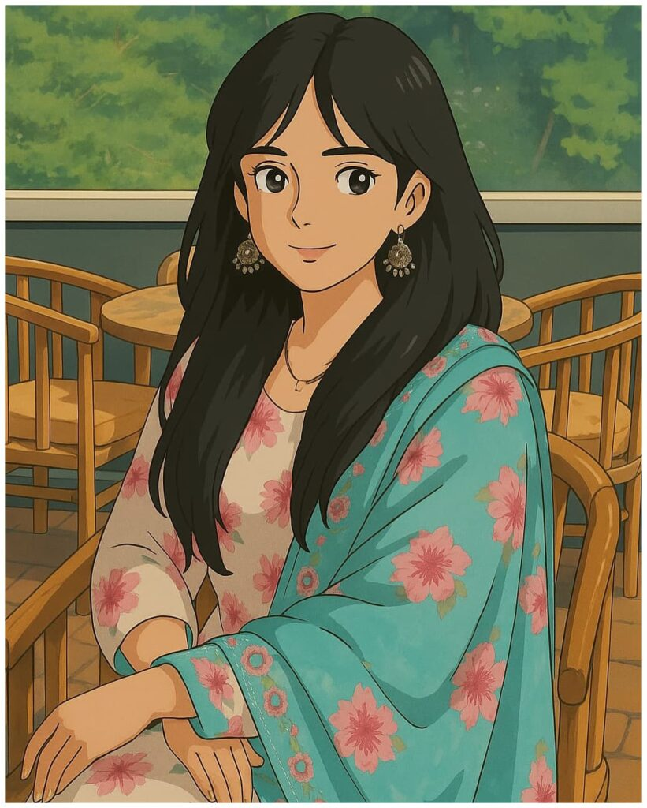

Have you ever dreamed of stepping into the whimsical, hand-drawn world of Studio Ghibli? Imagine turning your selfies, pet pics, or random sketches into magical artwork inspired by Spirited Away or My Neighbor Totoro.

Let’s dive into the enchanting world of Ghibli-style art and unleash your inner Miyazaki!
What Are Ghibli-Style Images?
Before we get started, let’s clarify what makes Ghibli-style images so special. Studio Ghibli, founded in 1985 by Hayao Miyazaki and Isao Takahata, is a Japanese animation studio famous for its breathtaking visuals. Think lush forests, soft pastel colors, flowing lines, and a sprinkle of magic—those are the hallmarks of Ghibli art. Films like Princess Mononoke and Howl’s Moving Castle have inspired a viral trend in 2025, where fans use AI to recreate this aesthetic. With tools like ChatGPT’s GPT-4o, you can now generate these dreamy images online, often for free!
Why Use ChatGPT as a Ghibli Image Generator?
ChatGPT, powered by OpenAI’s GPT-4o, recently rolled out a native image-generation feature that’s taken the internet by storm. Unlike earlier tools like DALL-E, this upgrade lets you create or transform images directly within ChatGPT—no extra subscriptions needed for basic use. It’s fast, user-friendly, and perfect for crafting Ghibli-style artwork. Plus, it’s accessible online, making it a top pick for anyone searching for a “Ghibli image generator online free.”
Step-by-Step Guide: Creating Ghibli-Style Images on ChatGPT for Free
Ready to make your own Ghibli masterpiece? Follow these detailed steps to use ChatGPT as your free Ghibli AI generator.
Step 1: Access ChatGPT Online
- What You Need: A device with internet access (phone, laptop, or tablet).
- How to Do It: Head to chat.openai.com and log in. If you don’t have an account, sign up—it’s free and takes less than a minute.
- Tip: Ensure you’re on the GPT-4o model (check the top-left dropdown). This is the version with image-generation capabilities, available to free-tier users as of March 28, 2025, though with some limits.
Step 2: Prepare Your Image or Idea
- Option 1 – Transform a Photo: Have a picture ready (e.g., a selfie, your dog, or a landscape). Clear, well-lit images work best.
- Option 2 – Create from Scratch: If you don’t want to upload a photo, think of a scene—like “a girl under a cherry blossom tree”—to describe in words.
- SEO Note: This flexibility makes ChatGPT a standout “Ghibli image generator online,” catering to both photo-based and text-based creators.
Step 3: Craft the Perfect Prompt
- Why It Matters: The prompt is your magic wand. The more specific you are, the better your Ghibli-style result.
- Examples:
- For a photo: “Transform this image into a Studio Ghibli-style artwork with soft pastel colors, whimsical details, and a lush forest background.”
- For a new scene: “Generate a Ghibli-style image of a cozy village at dusk, with glowing lanterns and a gentle breeze, in soft watercolors.”
- Pro Tip: Mention “Studio Ghibli” explicitly and add descriptors like “hand-drawn,” “dreamy,” or “magical” to nail the vibe.
Step 4: Upload Your Photo (If Applicable)
- How to Do It: Click the paperclip icon in ChatGPT’s message bar, upload your image, and pair it with your prompt.
- Note: Free users can upload images, but some requests (like real people’s likenesses) might be blocked due to content policies. If that happens, try a generic description instead.
Step 5: Generate Your Ghibli-Style Image
- Action: Hit “Enter” after typing your prompt. ChatGPT will process it—usually in 10-60 seconds, depending on demand.
- What to Expect: A stunning Ghibli-style image will appear. Free-tier users get 2-3 generations per day, so make your prompts count!
Step 6: Refine and Download
- Refining: If it’s not perfect, tweak your prompt (e.g., “Add more greenery” or “Softer lighting”) and regenerate.
- Downloading: Right-click the image (or long-press on mobile) and select “Save Image As.” Now it’s yours to share or keep!
- SEO Bonus: This ease of use makes ChatGPT a go-to “Ghibli AI generator free” option.
Ghibli Art Photo Creator Prompts
Want more awesome prompts?
Join our community and get the latest viral prompts daily.
Follow on Instagram
Free Alternatives to ChatGPT for Ghibli-Style Images
While ChatGPT is awesome, its free tier has limits. If you’re hunting for a “Ghibli image generator free” with more flexibility, try these online alternatives:
1. Craiyon
- What It Is: A simple, web-based AI art tool.
- How to Use: Visit craiyon.com, type a prompt like “Studio Ghibli-style cat in a forest,” and click “Draw.”
- Pros: Totally free, no account needed.
- Cons: Lower resolution than ChatGPT.
2. Getimg.ai (Ghibli Diffusion)
- What It Is: A Stable Diffusion-based tool fine-tuned for Ghibli art.
- How to Use: Sign up for free at getimg.ai, select the Ghibli Diffusion model, and input your prompt.
- Pros: 100 free images monthly, high-quality output.
- Cons: Requires signup.
3. AnimeGenius
- What It Is: A free online Ghibli AI generator.
- How to Use: Go to animegenius.live3d.io, enter a prompt, and generate.
- Pros: No credit card needed, fast results.
- Cons: Basic customization.
These tools are perfect for anyone searching “Ghibli image generator online free” or “Ghibli AI generator free” who wants options beyond ChatGPT.
Tips for Perfect Ghibli-Style Images
- Be Descriptive: Mention colors (e.g., “pastel greens”), settings (e.g., “misty mountains”), and mood (e.g., “peaceful”).
- Experiment: Try different prompts or tools to find your favorite style.
- Avoid Overload: Keep prompts concise—AI works best with clear instructions.
The Controversy: Is This Really Ghibli?
Here’s a quick heads-up: not everyone’s thrilled about AI Ghibli art. Hayao Miyazaki once called AI-generated images “an insult to life itself,” highlighting the human effort behind Ghibli’s work. While tools like ChatGPT make it fun and accessible, some argue it sidesteps the artistry. At PromptSeen.com, we see it as a creative tribute—your chance to play in Ghibli’s sandbox, not replace it.
Why This Trend Matters in 2025
The “ChatGPT Ghibli style images generator” craze hit peak popularity in March 2025, fueled by GPT-4o’s launch and Studio Ghibli’s 40th anniversary buzz. It’s not just a fad—it’s a testament to how AI democratizes art. Whether you’re a fan, an artist, or just curious, this is your moment to join the fun.
Get Started Today!
Ready to create your own Ghibli-style images? Head to ChatGPT or one of the free alternatives above and start experimenting. Share your creations with us at PromptSeen.com—we’d love to feature them! For more AI art tips and prompts, explore ur Prompt Library and Guides.
What’s your first Ghibli-inspired idea? Drop it in the comments below, and let’s bring some magic to life!